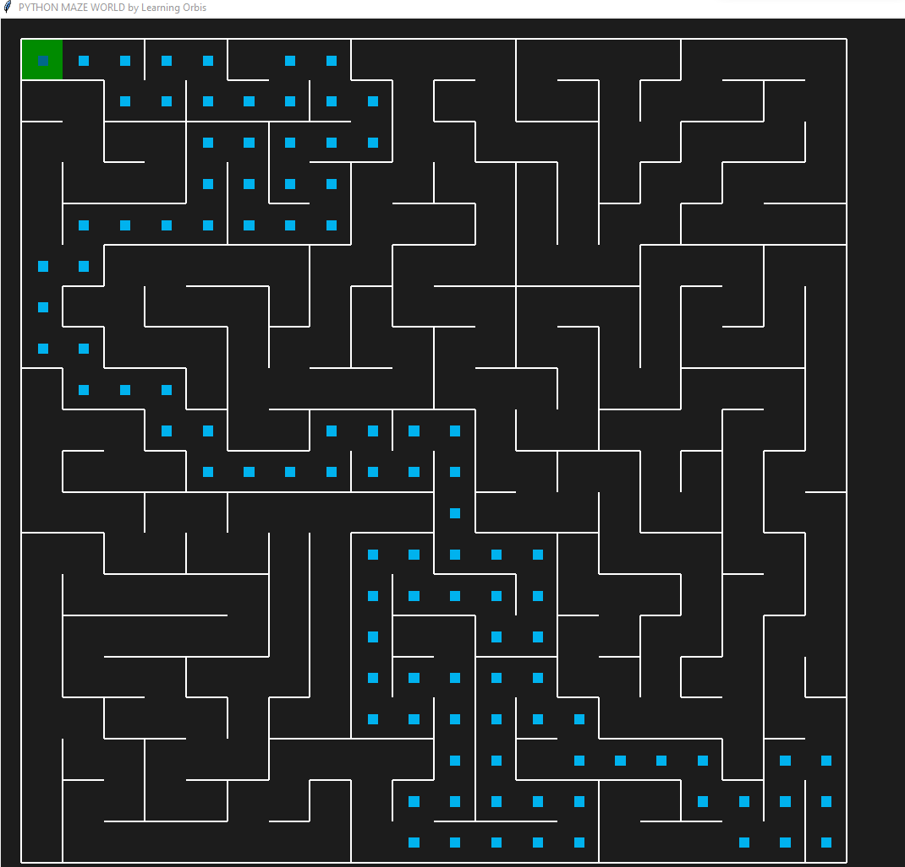
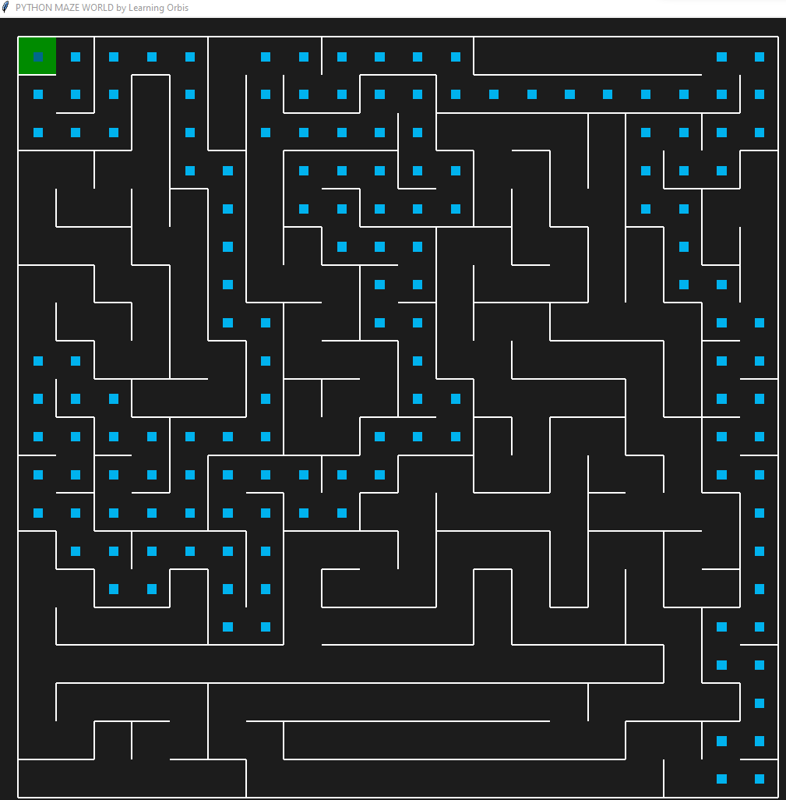

Maze Setup
Depth First Search Algorithm
In a new python file add the following:
from pyamaze import maze, agent, COLOR
def DFS(m):
# define variables
start = (m.rows, m.cols)
explored = [start]
frontier = [start]
dfsPath = {}
if __name__ == '__main__':
m.run()
Once the variables are setup, let's add a check if we've reached the finish line or not:
if start is None:
start = (m.rows, m.cols)
# found finish line
while len(frontier) > 0:
currentCell = frontier.pop()
if currentCell == (1, 1): # end cell/block
break
The code below will give the agent a set of directions to follow 'first' as its preferred pathway and then traverse those directions (if possible). Example 'ESNW' or 'WNSE'.
for direction in 'WNSE':
if m.maze_map[currentCell][direction]:
if direction == 'E':
childCell = (currentCell[0], currentCell[1] + 1)
elif direction == 'W':
childCell = (currentCell[0], currentCell[1] - 1)
elif direction == 'S':
childCell = (currentCell[0] + 1, currentCell[1])
elif direction == 'N':
childCell = (currentCell[0] - 1, currentCell[1])
if childCell in explored:
continue
explored.append(childCell)
frontier.append(childCell)
dfsPath[childCell] = currentCell
Creating a dictionary to map the agent pathway through the map.
fwdPath = {}
cell = (1, 1)
while cell != start:
fwdPath[dfsPath[cell]] = cell
cell = dfsPath[cell]
return fwdPath
below the line
if __name__ == '__main__':
Insert the following code to create the maze and agent(s)
m = maze(20, 20)
m.CreateMaze(saveMaze=True) # save the maze as a .csv file
path = DFS(m)
a = agent(m, footprints=True)
m.tracePath({a: path}, delay=100, showMarked=True, kill=True)
m.run()
Loading Maps
Adding the following modifications will allow you to run a map made in the editor or to load a premade map from a csv file.
if __name__ == '__main__':
# run a standard 20, 20 maze or run the maze in the file
loadMaze = False
if not loadMaze:
m = maze(20, 20)
m.CreateMaze(saveMaze=True)
path = DFS(m)
a = agent(m, footprints=True)
m.tracePath({a: path}, delay=100, showMarked=True, kill=True)
m.run()
if loadMaze:
m = maze()
m.CreateMaze(loadMaze='maze.csv')
path = DFS(m)
a = agent(m, footprints=True)
m.tracePath({a: path}, delay=100, showMarked=True, kill=True)
m.run()
Output
Below is different examples of direction choices and the results
using:
for direction in 'ESNW':

using:
for direction in 'WNSE':

Note: the direction only REALLY applies to having 'loopPercent=val'.